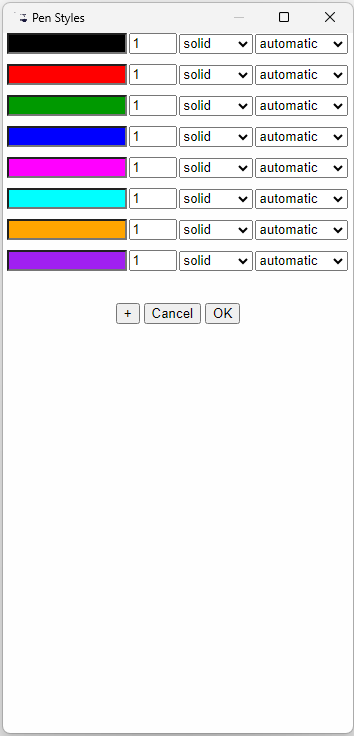

This brings up the pen styles control form. When variables are attached to the input ports, their names will appear above each formatting bar. This menu can also be accessed from the Pen Styles button on the Options form.
